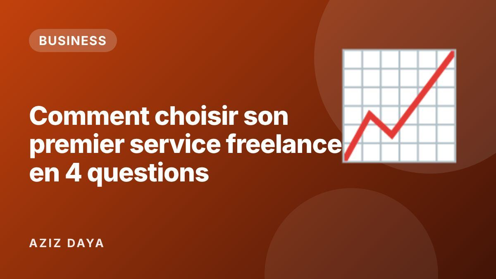

Comment choisir son premier service freelance en 4 questions

Un service freelance est une prestation de travail (rédaction, graphisme, montage, gestion de réseaux sociaux…) vendue à un client par un indépendant, avec un résultat défini, un délai et un prix.
Le plus grand blocage du débutant, c'est de ne pas savoir quoi vendre. Voici quatre questions pour trancher sans stress.
Sommaire
- Question 1 : qu'est-ce que je sais déjà faire ?
- Question 2 : est-ce que des gens paient pour ça ?
- Question 3 : puis-je livrer un premier résultat en quelques semaines ?
- Question 4 : est-ce que cela me plaît assez pour le répéter ?
- Votre grille de décision
- Que faire ensuite ?
- Quiz : testez vos connaissances
- FAQ
Question 1 : qu'est-ce que je sais déjà faire ?
Notez tout : écrire, dessiner, utiliser un logiciel, parler une langue, organiser, convaincre. Une compétence que vous maîtrisez déjà vous fait gagner des mois.
Question 2 : est-ce que des gens paient pour ça ?
Cherchez des offres sur des plateformes de freelance ou des annonces. Si des clients demandent ce service régulièrement, il y a un marché.
Question 3 : puis-je livrer un premier résultat en quelques semaines ?
Choisissez une compétence que vous pouvez apprendre et pratiquer rapidement. Mieux vaut un service simple que vous livrez bien qu'un service ambitieux que vous ne maîtrisez pas.
Question 4 : est-ce que cela me plaît assez pour le répéter ?
Vous allez faire ce travail de nombreuses fois. Un minimum d'intérêt vous aidera à tenir quand les premiers résultats tardent.
Votre grille de décision
| Question | Ce que vous cherchez | Bon signe |
|---|---|---|
| Je sais déjà faire ? | Une compétence existante | Je peux livrer vite |
| On paie pour ça ? | Une demande régulière | Des offres en ligne |
| Premier résultat rapide ? | Un service simple | Livrable en quelques semaines |
| Ça me plaît ? | De la motivation | J'ai envie de le répéter |
Que faire ensuite ?
Gardez une seule option, définissez une offre simple (ce que vous faites, pour qui, en combien de temps) et créez vos premiers exemples.

Mes premiers 10 000 € en ligne
Une méthode claire pour passer à l'action pas à pas. Ce n'est pas une promesse de gains : vos résultats dépendent de votre travail et de votre régularité.
Découvrir le guideQuiz : testez vos connaissances
FAQ
Peut-on changer de service plus tard ?
Oui. Commencer avec un service ne vous enferme pas : vous pourrez ajuster ou élargir votre offre avec l'expérience.
Et si plusieurs compétences m'intéressent ?
Appliquez les quatre questions à chacune, puis gardez celle qui coche le plus de cases pour démarrer.
Comment vérifier la demande pour un service ?
Regardez les offres sur des plateformes de freelance, des annonces et des groupes professionnels : des demandes répétées indiquent un marché.
Faut-il baisser ses prix pour trouver des clients ?
Pas systématiquement. Un tarif honnête, une offre claire et de bons exemples comptent davantage qu'un prix très bas.
À lire aussi
- Freelance débutant : par où commencer quand on part de zéro
- 5 erreurs de débutant quand on veut gagner de l'argent en ligne
- Comment bien écrire un prompt pour une IA : 5 règles simples
Vous avez aimé cet article ?
Partagez-le avec quelqu'un qui en a besoin, et découvrez le reste du blog pour aller plus loin.